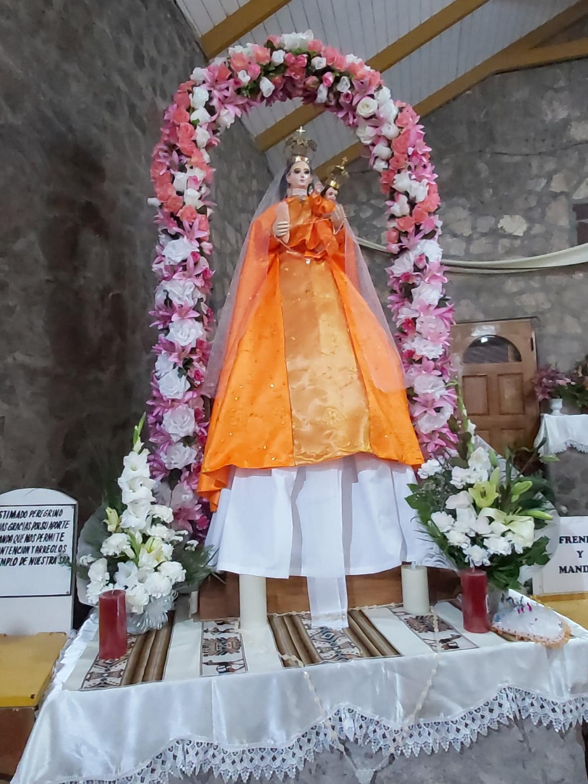

Desde 1961 · Santuario de Ayquina
Más de 50 años bailando por la Virgen de Guadalupe de Ayquina
Con orgullo, fe, devoción y elegancia.
La Gran Diablada Calameña danza la representación de la eterna lucha entre el Bien y el Mal en las festividades religiosas del poblado de Ayquina en el norte de Chile.
Historia
Origen y fe
La Gran Diablada Calameña fue fundada en Calama el 22 de octubre de 1961 por un grupo de personas devotas de la Virgen Guadalupe de Ayquina, bajo el impulso de su fundador, Juan Benavides. Es institución fundadora de la Asociación de Bailes Religiosos del Santuario de Ayquina de Calama, y participa activamente en las festividades religiosas en su honor.
«La danza recrea la eterna lucha entre el Bien y el Mal — una expresión espectacular de colorido y brillo con los trajes y accesorios.»
Somos una comunidad cristiana que expresa su fe católica mediante la danza, la música y los cantos, para mantener viva esta religiosidad popular tan arraigada en el norte de Chile. Cada 8 de septiembre bailamos en el Santuario de Ayquina junto a los demás bailes religiosos, con alegría y gratitud a la Virgen María, Madre de Jesús.

Comparsas
Dieciocho comparsas, una sola coreografía
Luciferes, chinas supay, satanases, diablesas y otras figuras dan vida a la legión del mal, mientras quienes representan la virtud sostienen el otro extremo de la danza. Así se organizan las comparsas:
- Almas
- Caporal
- China Supay
- Diablesa
- Diablos
- Doble Cara
- Huari
- Jukumaris
- Kacha Viuda
- Lucifer
- Ñaupas
- Osos
- Pecados
- Perro Infierno
- Satanás
- Tentación
- Virtud
- Yana Conciencia
Música
Nuestras canciones
Diabladas y cuecas propias de la agrupación, compuestas para acompañar nuestra devoción a la Virgen de Guadalupe de Ayquina. Escúchalas aquí o descárgalas.
-
↓ MP3
La Gran Calameña
-
↓ MP3
Entran los Diablos
-
↓ MP3
Diablo Desconocido
-
↓ MP3
A rajar la bota Diablo
-
↓ MP3
Naranja y Negro 50 años
-
↓ MP3
60 años
-
↓ MP3
60 años de fe
-
↓ MP3
Recuerdos GDC
-
↓ MP3
Desde Ayquina
-
↓ MP3
Adiós Chinita
© Gran Diablada Calameña — Todos los derechos reservados
Estas canciones son obras originales de la Gran Diablada Calameña y están protegidas por la Ley N° 17.336 de Propiedad Intelectual. Puedes escucharlas y descargarlas para uso personal y devocional. Queda prohibida su reproducción pública, modificación, venta, distribución o inscripción a nombre de terceros sin autorización escrita de la agrupación. Cada archivo lleva incrustados los datos de autoría y derechos.
Para solicitar autorización de uso, escríbenos a gdcayquina@gmail.com.
Directiva
Quiénes la conducen
Presidente
Sergio Velásquez D.
Vicepresidente
Marco Flores M.
1er Director
Mario Pérez
2do Director
Jorge Montalbán
3er Director
Cristian Donoso
Tesorero
Pedro Donoso O.
Pro-Tesorero
Héctor Matus B.
Caporal
Cristian Pizarro
Caporal
José Carvajal
Actividades
Nuestro calendario
Contenido de ejemplo — se reemplazará por el calendario vigente de la temporada.
Ensayo general
14:30 – 18:00 hrs
Capilla Sagrado Corazón de Jesús
Bloques citados: Chinas Supay y Lucifer y Waris.
Asamblea general
20:45 hrs
Auditorio Inacap
Citación a todos los socios activos.
Contacto
Súmate a la promesa
¿Quieres bailar, hacerte socio o simplemente saber más sobre la Diablada? Escríbenos por cualquiera de estos canales.